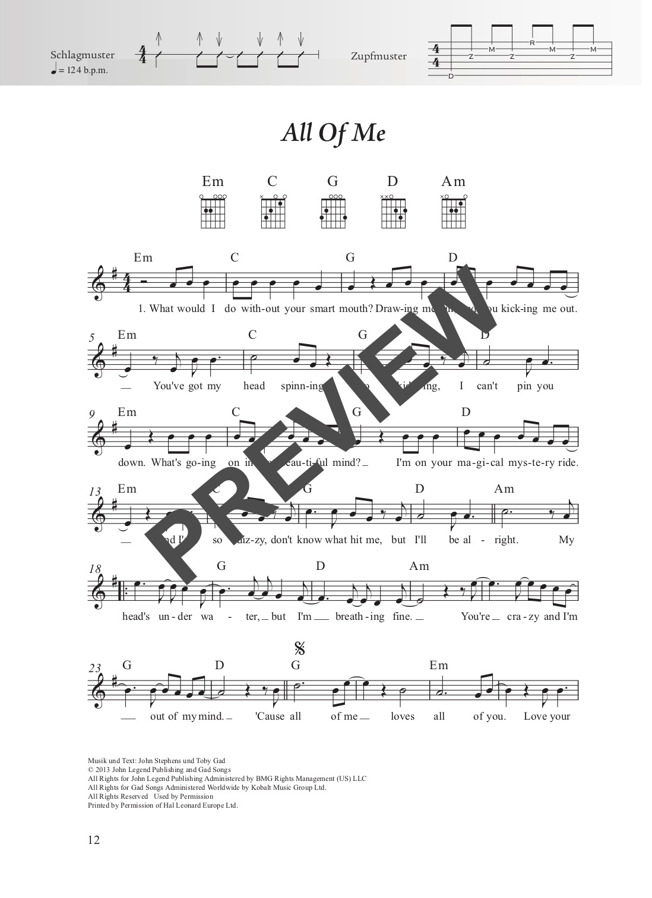
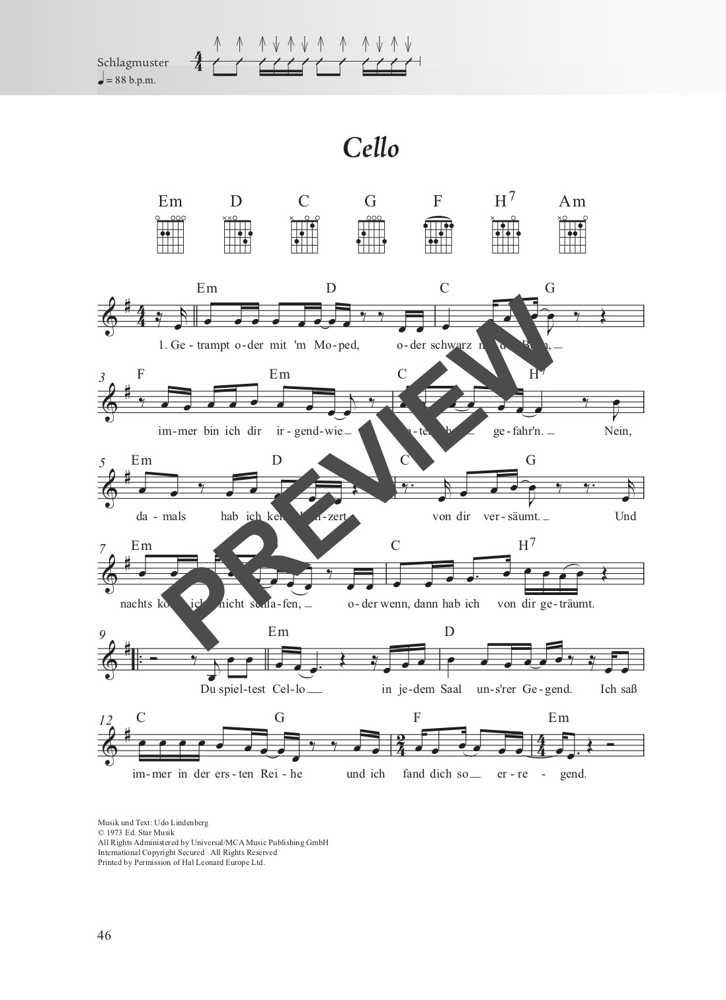

Erhältliche Ausgaben
| Ausgabe | Format | Seiten | Bindung | Preis |
|---|---|---|---|---|
| Gitarre | 18 × 25 cm | 224 | Stay-Open-Bindung | 19,50 € |
| Ukulele | 18 × 25 cm | 224 | Stay-Open-Bindung | 19,50 € |
| XXL (Gitarre) | 23 × 31 cm | 224 | Spiralbindung | 26,50 € |
Erhältlich bei Schott Music oder im Musikfachhandel.
Über das Buch
Das Rock & Pop Fetenbuch 2 setzt die Erfolgsreihe fort und enthält 100 weitere beliebte und bekannte Songs aus den letzten 60 Jahren Popgeschichte. Mit beliebten Oldies aus den 60er Jahren von Elvis Presley, den Beatles oder Simon & Garfunkel bis hin zu aktuellen Hits von Ed Sheeran, Adele oder Taylor Swift gibt es hier viele Songs, die jeder im Ohr hat und die zu singen viel Spaß macht.
Allen Songs vorangestellt sind die benötigten Akkordgriffe sowie Schlag- und Zupfmuster für die Begleitung. Dank der Zupfmuster wird auch der Einstieg in die Welt des Folkpickings spielend leicht.
Die XXL-Version mit Spiralbindung steht perfekt auf dem Notenständer. Die Stücke sind fast immer auf maximal zwei Seiten notiert – beim Spielen muss also nicht umgeblättert werden. Noten und Texte sind groß genug, um sie auch mit bis zu einem Meter Abstand gut lesen zu können – ideal für Personen mit Sehschwäche und für das gemeinsame Singen in der Gruppe.
Den ersten Band gibt es hier: Rock & Pop Fetenbuch 1.
Spotify-Playlist
Alle 100 Songs zum Anhören:
Inhaltsverzeichnis
100 Lieder in alphabetischer Reihenfolge:
- Afterglow
- All Good Things
- All I Have To Do Is Dream
- All Of Me
- Altes Fieber
- Always On My Mind
- Annie's Song
- Applaus Applaus
- Arms Of Mary
- ...Baby One More Time
- Bad Liar
- Bad Moon Rising
- Barbara Ann
- Bitch
- Blinding Lights
- Born To Be Wild
- Boulevard Of Broken Dreams
- Bridge Over Troubled Water
- Can't Stop Loving You
- Candle In The Wind
- Cello
- Cover Me In Sunshine
- Creep
- Dancing In The Dark
- Don't Speak
- Dreamer
- Drive By
- Du trägst keine Liebe in dir
- Every Rose Has Its Thorn
- Fernando
- First Day Of My Life
- Girl On Fire
- Havana
- Have You Ever Seen The Rain
- Heal The World
- Heart Of Gold
- Here Without You
- Hollywood Hills
- Human
- I Do
- I Kissed A Girl
- I Want It That Way
- I'm A Believer
- If You Could Read My Mind
- In The Ghetto
- It's My Life
- Johnny B
- Junimond
- Just Give Me A Reason
- Kiss From A Rose
- Knockin' On Heaven's Door
- Locomotive Breath
- Love Story
- Lyin' Eyes
- Make You Feel My Love
- Man On The Moon
- Mary's Prayer
- Memories
- Mr. Rock & Roll
- Mull Of Kintyre
- No
- No Matter What
- Nothing Compares 2 U
- Nothing's Gonna Stop Us Now
- Ob-La-Di Ob-La-Da
- Ochrasy
- Ohne dich
- Red Red Wine
- Rescue Me
- Royals
- Saved By The Bell
- Senorita
- Shallow
- Sign Of The Times
- Someone Like You
- Someone You Loved
- Something In The Water
- Streets Of London
- Suzanne
- Sweet Caroline
- Sweet Sixteen
- Take Me To Church
- The Air That I Breathe
- The Longest Time
- Thinking Out Loud
- (I've Had) The Time Of My Life
- Viva La Vida
- Wake Me Up
- Wellerman
- When You Say Nothing At All
- Wieder hier
- Wild World
- Wish You Were Here
- With A Little Help From My Friends
- With Or Without You
- You Are The Reason
- You Got It
- You Light Up My Life
- You Raise Me Up
- You'll Never Walk Alone
Beispielseiten
Einen Eindruck vom Inhalt und der Gestaltung:



